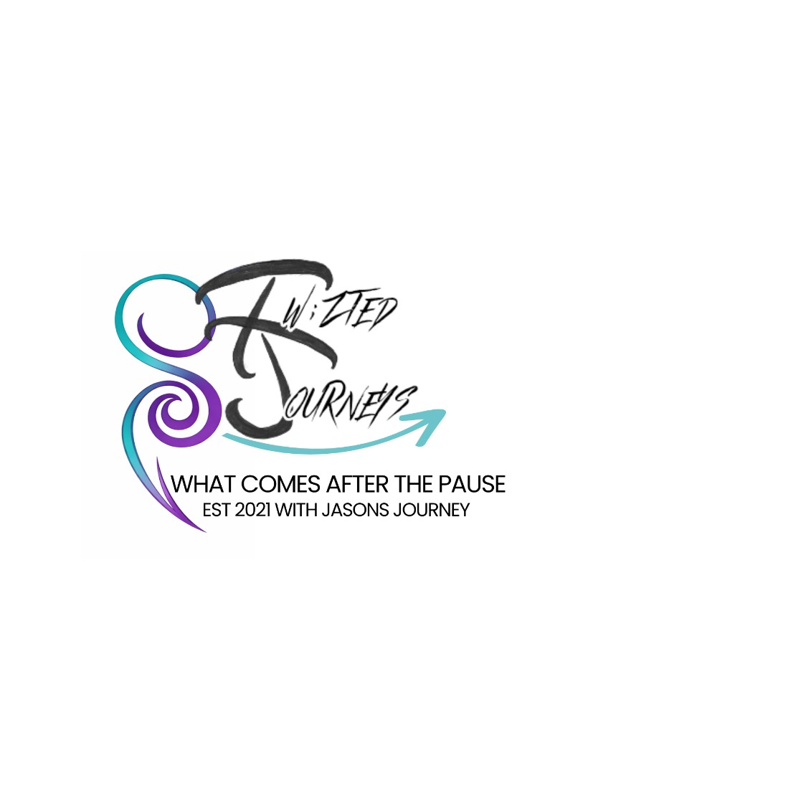

In the world we live in today, it is so very important to not whisper, hide, or be afraid to talk openly about suicide and mental health. Twizted Journeys advocates loudly so others don't suffer in silence.
If you or someone you know is in crisis right now — call or text 988. Free. Confidential. Available 24/7. You don't have to be suicidal to call. You can call for someone you're worried about.
Suicide Awareness For Everyone
Twizted Journeys hosts S.A.F.E. events throughout the year — workshops, rides, walks, and community gatherings designed to break the stigma and open the conversation around suicide and mental health. Our events allow people to share the journey of their loved ones that have cut their story short, and also their own journey of continuing after a pause.
We are proud advocates with AFSP (American Foundation for Suicide Prevention) and proud to be part of the Indiana Suicide Prevention Coalition.
Knowing the signs can save a life. Trust your gut — if something feels off, reach out.
Asking someone if they are thinking about suicide does NOT put the idea in their head. It opens a door that can save their life.
Organizations Twizted Journeys works with and recommends.
Call or text 988. Free, confidential, available 24/7 for any mental health crisis — not just suicidal thoughts.
988lifeline.orgText HOME to 741741 to reach a trained crisis counselor. Free. 24/7. No phone call required.
crisistextline.orgTJ is a proud AFSP advocate. Research, resources, and the Out of the Darkness walks.
afsp.orgEducation, advocacy, and support for individuals and families affected by mental illness.
nami.orgSupport and resources for those affected by addiction and overdose loss in Indiana.
overdoselifeline.orgStatewide coalition for suicide prevention resources, training, and community support.
suicidepreventionalliance.orgFree, confidential crisis support in 50+ countries. Find the right helpline wherever you are.
findahelpline.comCompassionate care and grief support for those affected by suicide loss, including military families.
taps.orgPeer support connecting those who have lost someone to suicide with trained AFSP volunteers.
afsp.org/HealingConversationsTwizted Journeys facilitates Finding Forward — a Tuesday evening peer support group for suicide loss survivors. Free. Low-barrier. Community-centered. Adults 18+. Open to all backgrounds and identities.
Email for Meeting DetailsCall or text 988 — available 24/7, free & confidential.
988lifeline.org